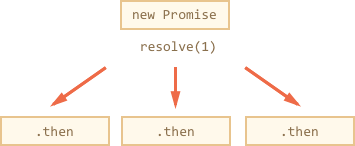

Let’s return to the problem mentioned in the chapter Introduction: callbacks. If we implement this example using Promise chaining, it would look like this:
new Promise(function(resolve, reject) {
setTimeout(() => resolve(1), 1000); // (*)
}).then(function(result) { // (**)
alert(result); // 1
return result * 2;
}).then(function(result) { // (***)
alert(result); // 2
return result * 2;
}).then(function(result) {
alert(result); // 4
return result * 2;
});
The idea is that the result is passed through the chain of .then handlers. The whole thing works, because a call to promise.then returns a promise, so that we can call the next .then on it.
When a handler returns a value, it becomes the result of that promise, so the next .then is called with that value. To make these words more clear, here’s the start of the chain:
new Promise(function(resolve, reject) {
setTimeout(() => resolve(1), 1000);
}).then(function(result) {
alert(result);
return result * 2; // <-- (1)
}) // <-- (2)
// .then…
The value returned by .then… is a promise, that’s why we are able to add another .then at (2). When the value is returned in (1), that promise becomes resolved, so the next handler runs with the value.
Unlike the chaining, technically we can also add many .then to a single promise, like this:
let promise = new Promise(function(resolve, reject) {
setTimeout(() => resolve(1), 1000);
});
promise.then(function(result) {
alert(result); // 1
return result * 2;
});
promise.then(function(result) {
alert(result); // 1
return result * 2;
});
promise.then(function(result) {
alert(result); // 1
return result * 2;
});
…But that’s a totally different thing. Here’s the picture (compare it with the chaining above):
All .then on the same promise get the same result – the result of that promise. So in the code above all alert show the same: 1. There is no result-passing between them.
In practice we rarely need multiple handlers for one promise. Chaining is used much more often.
Normally, a value returned by a .then handler is immediately passed to the next handler. But there’s an exception. If the returned value is a promise, then the further execution is suspended until it settles. After that, the result of that promise is given to the next .then handler.
new Promise(function(resolve, reject) {
setTimeout(() => resolve(1), 1000);
}).then(function(result) {
alert(result); // 1
return new Promise((resolve, reject) => { // (*)
setTimeout(() => resolve(result * 2), 1000);
});
}).then(function(result) { // (**)
alert(result); // 2
return new Promise((resolve, reject) => {
setTimeout(() => resolve(result * 2), 1000);
});
}).then(function(result) {
alert(result); // 4
});
Here the first .then shows 1 returns new Promise(…) in the line (*). After one second it resolves, and the result (the argument of resolve, here it’s result*2) is passed on to handler of the second .then in the line (**). It shows 2 and does the same thing.
So the output is again 1 → 2 → 4, but now with 1 second delay between alert calls.
Returning promises allows us to build chains of asynchronous actions.
Let’s use this feature with loadScript to load scripts one by one, in sequence:
loadScript("/article/promise-chaining/one.js").then(function(script) {
return loadScript("/article/promise-chaining/two.js");
}).then(function(script) {
return loadScript("/article/promise-chaining/three.js");
}).then(function(script) {
// use functions declared in scripts
// to show that they indeed loaded
one();
two();
three();
});
Here each loadScript call returns a promise, and the next .then runs when it resolves. Then it initiates the loading of the next script. So scripts are loaded one after another. We can add more asynchronous actions to the chain. Please note that code is still “flat”, it grows down, not to the right. There are no signs of “pyramid of doom”.
Please note that technically it is also possible to write .then directly after each promise, without returning them, like this:
loadScript("/article/promise-chaining/one.js").then(function(script1) {
loadScript("/article/promise-chaining/two.js").then(function(script2) {
loadScript("/article/promise-chaining/three.js").then(function(script3) {
// this function has access to variables script1, script2 and script3
one();
two();
three();
});
});
});
This code does the same: loads 3 scripts in sequence. But it “grows to the right”. So we have the same problem as with callbacks. Use chaining (return promises from .then) to evade it.
Sometimes it’s ok to write .then directly, because the nested function has access to the outer scope (here the most nested callback has access to all variables scriptX), but that’s an exception rather than a rule.
To be precise, .then may return an arbitrary “thenable” object, and it will be treated the same way as a promise. A “thenable” object is any object with a method .then.
The idea is that 3rd-party libraries may implement “promise-compatible” objects of their own. They can have extended set of methods, but also be compatible with native promises, because they implement .then.
Here is an example of thenable object:
class Thenable {
constructor(num) {
this.num = num;
}
then(resolve, reject) {
alert(resolve); // function() { native code }
// resolve with this.num*2 after the 1 second
setTimeout(() => resolve(this.num * 2), 1000); // (**)
}
}
new Promise(resolve => resolve(1))
.then(result => {
return new Thenable(result); // (*)
})
.then(alert); // shows 2 after 1000ms
JavaScript checks the object returned by .then handler in the line (*): if it has a callable method named then, then it calls that method providing native functions resolve, reject as arguments (similar to executor) and waits until one of them is called. In the example above resolve(2) is called after 1 second (**). Then the result is passed further down the chain.
This feature allows to integrate custom objects with promise chains without having to inherit from Promise.
The code of the executor and promise handlers has an "invisible try..catch" around it. If an error happens, it gets caught and treated as a rejection. For instance, this code:
new Promise(function(resolve, reject) {
throw new Error("Whoops!");
}).catch(alert); // Error: Whoops!
…Works the same way as this:
new Promise(function(resolve, reject) {
reject(new Error("Whoops!"));
}).catch(alert); // Error: Whoops!
The "invisible try..catch" around the executor automatically catches the error and treats it as a rejection. That’s so not only in the executor, but in handlers as well. If we throw inside .then handler, that means a rejected promise, so the control jumps to the nearest error handler. Here’s an example:
new Promise(function(resolve, reject) {
resolve("ok");
}).then(function(result) {
throw new Error("Whoops!"); // rejects the promise
}).catch(alert); // Error: Whoops!
That’s so not only for throw, but for any errors, including programming errors as well:
new Promise(function(resolve, reject) {
resolve("ok");
}).then(function(result) {
blabla(); // no such function
}).catch(alert); // ReferenceError: blabla is not defined
As a side effect, the final .catch not only catches explicit rejections, but also occasional errors in the handlers above.
As we already noticed, .catch behaves like try..catch. We may have as many .then as we want, and then use a single .catch at the end to handle errors in all of them.
In a regular try..catch we can analyze the error and maybe rethrow it if can’t handle. The same thing is possible for promises. If we throw inside .catch, then the control goes to the next closest error handler. And if we handle the error and finish normally, then it continues to the closest successful .then handler.
In the example below the .catch successfully handles the error:
// the execution: catch -> then
new Promise(function(resolve, reject) {
throw new Error("Whoops!");
}).catch(function(error) {
alert("The error is handled, continue normally");
}).then(() => alert("Next successful handler runs"));
Here the .catch block finishes normally. So the next successful handler is called. Or it could return something, that would be the same.
…And here the .catch block analyzes the error and throws it again:
// the execution: catch -> catch -> then
new Promise(function(resolve, reject) {
throw new Error("Whoops!");
}).catch(function(error) { // (*)
if (error instanceof URIError) {
// handle it
} else {
alert("Can't handle such error");
throw error; // throwing this or another error jumps to the next catch
}
}).then(function() {
/* never runs here */
}).catch(error => { // (**)
alert(`The unknown error has occurred: ${error}`);
// don't return anything => execution goes the normal way
});
The handler (*) catches the error and just can’t handle it, because it’s not URIError, so it throws it again. Then the execution jumps to the next .catch down the chain (**).
What happens when an error is not handled? For instance, after the rethrow as in the example above. Or if we forget to append an error handler to the end of the chain, like here:
new Promise(function() {
noSuchFunction(); // Error here (no such function)
}); // no .catch attached
Or here:
// a chain of promises without .catch at the end
new Promise(function() {
throw new Error("Whoops!");
}).then(function() {
// ...something...
}).then(function() {
// ...something else...
}).then(function() {
// ...but no catch after it!
});
In case of an error, the promise state becomes “rejected”, and the execution should jump to the closest rejection handler. But there is no such handler in the examples above. So the error gets “stuck”. In practice, that’s usually because of the bad code. Indeed, how come there’s no error handling?
Most JavaScript engines track such situations and generate a global error in that case. We can see it in the console. In the browser we can catch it using the event unhandledrejection:
window.addEventListener('unhandledrejection', function(event) {
// the event object has two special properties:
alert(event.promise); // [object Promise] - the promise that generated the error
alert(event.reason); // Error: Whoops! - the unhandled error object
});
new Promise(function() {
throw new Error("Whoops!");
}); // no catch to handle the error
The event is the part of the HTML standard. Now if an error occurs, and there’s no .catch, the unhandledrejection handler triggers: the event object has the information about the error, so we can do something with it.
Usually such errors are unrecoverable, so our best way out is to inform the user about the problem and probably report about the incident to the server.
In non-browser environments like Node.JS there are other similar ways to track unhandled errors.